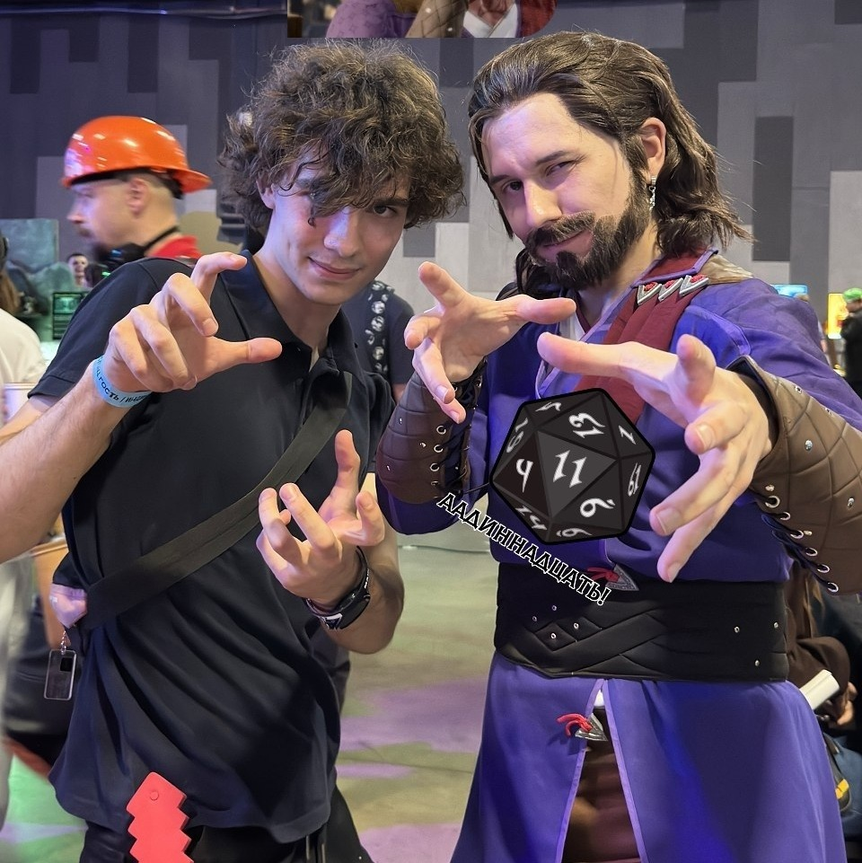

Мои увлечения
Компьютерные игры
Я обожаю сюжетные RPG и игры с открытым миром. Часто играю с друзьями.

Мои любимые игры (топ-5):
- Baldur's Gate 3
- The Witcher 3: Wild Hunt
- The Elder Scrolls V: Skyrim
- Grand Theft Auto V
- Red Dead Redemption 2
Игровые жанры, которые я предпочитаю:
- RPG
- Action-adventure
- Open-world
- Инди-игры
Музыка и гитара
Учусь играть на акустической гитаре, но в будущем хочу перейти на электрогитару. Моя любимая музыка – рок, особенно прогрессивный и психоделический.
Мои любимые группы:
- Pink Floyd
- Nirvana
- The Beatles
- Radiohead
- The Doors
- Dire Straits
- Pixies
Мои любимые цитаты из песен
«Hey you, don't tell me there's no hope at all» – Pink Floyd, "Hey You"
Cсылки
- Steam
- Ultimate Guitar аккорды и табы
- Официальный сайт Pink Floyd
- Официальный сайт Nirvana
- Официальный сайт The Beatles
- Официальный сайт Radiohead
Примеры форматирования
Жирный текст – для важных слов.
Курсивом можно выделить мысли.
Подчёркнутый – используйте редко.
Зачёркнутый – для устаревшей информации.
Выделенный маркером – для привлечения внимания.
Маленький текст – для сносок или дополнительных деталей.